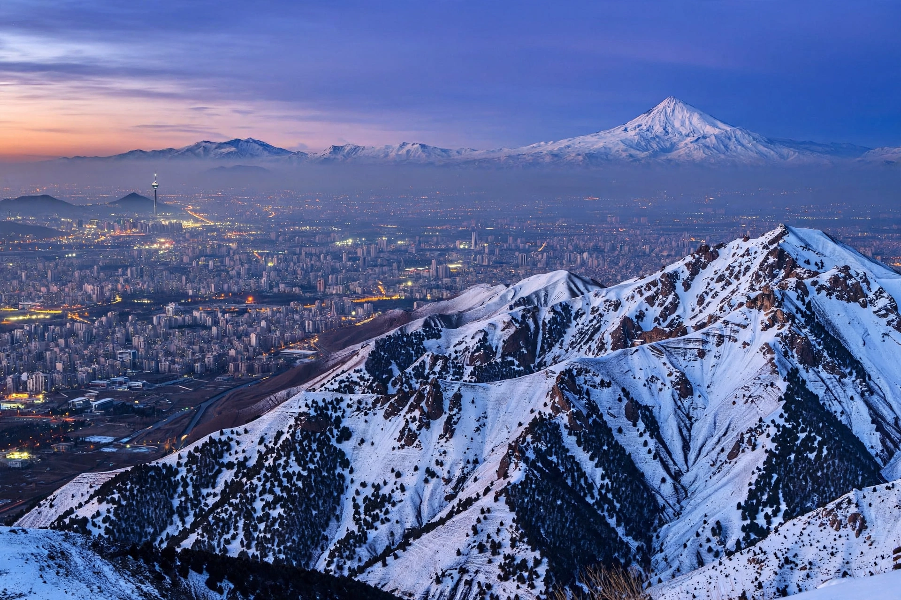

Alborz
The Alborz (Persian: البرز) is a mountain range in northern Iran that runs from the border with Azerbaijan in the northwest, along the southern shore of the Caspian Sea, to the borders of Turkmenistan and Afghanistan in the northeast. It divides the arid Iranian plateau from the humid Caspian lowlands and includes Mount Damavand, at 5,609 m the highest peak in Iran and the Middle East and the highest volcano in Asia.

| Alborz | |
|---|---|
| Highest peak | Mount Damavand (5,609 m) |
| Length | c. 900 km |
| Country | Iran |
| Geology | Fold-and-thrust belt; volcanic activity |
Geography
The range is narrow (60–130 km wide) but long, forming an arc around the southwestern and southern Caspian. Its northern slopes are covered by the Hyrcanian forests, a lush temperate rainforest and UNESCO World Heritage Site, while the south-facing slopes overlooking Tehran and the interior plateau are dry and steppe-like. Major passes and tunnels, including the Karaj–Chalus road, connect the capital region to the Caspian provinces of Gorgan, Mazandaran and Gilan.
Geology and mythology
The Alborz is an active fold-and-thrust belt formed by the collision of the Arabian and Eurasian plates; it remains seismically active and a source of major earthquakes. In Persian mythology and Zoroastrian tradition, the mountain Hara Berezaiti (Alborz) was a sacred cosmic mountain, and the range also features in the Shahnameh, where Damavand is the prison of the tyrant Zahhak.
See also
Categories: Mountain ranges of Iran · Caspian Sea